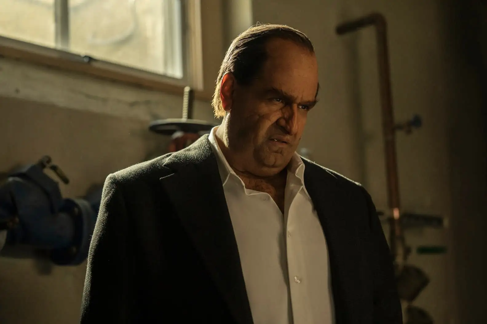
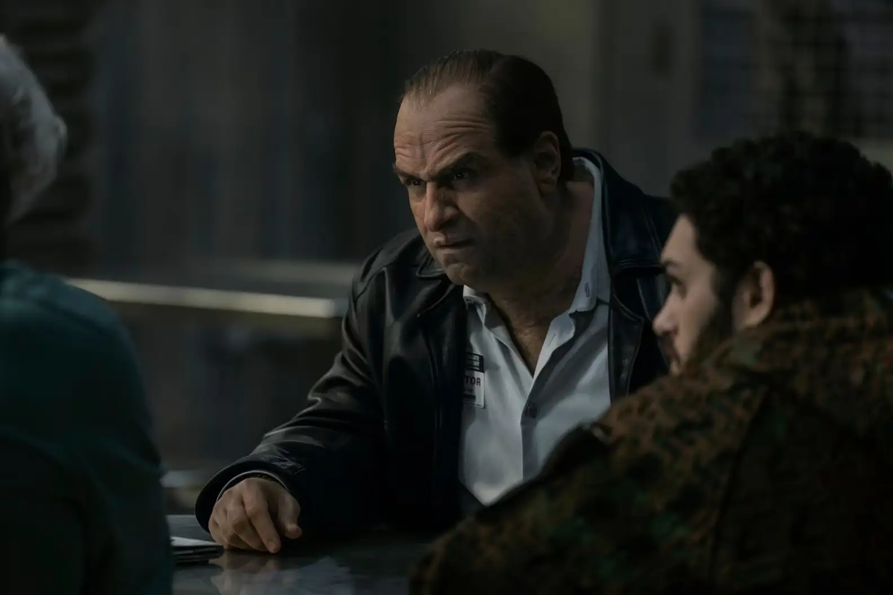
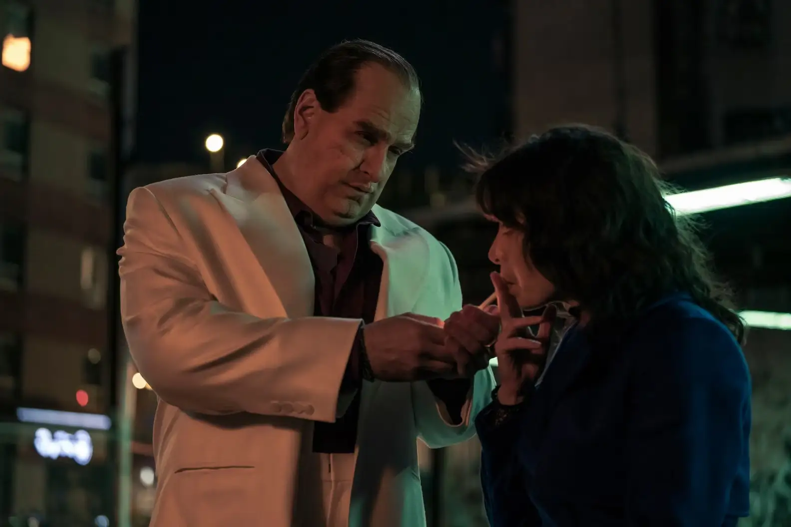
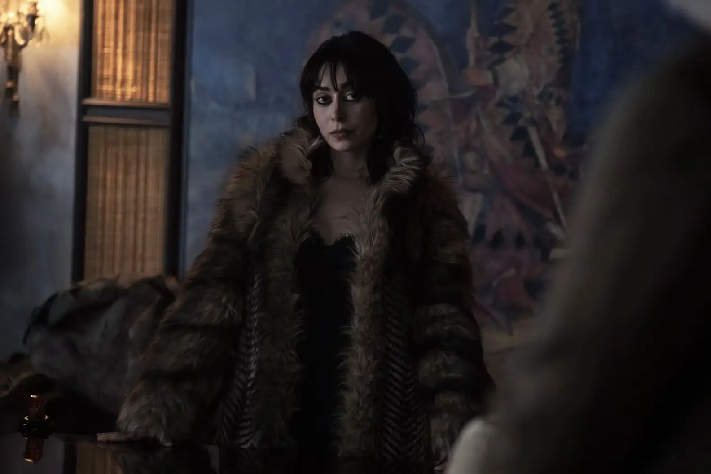
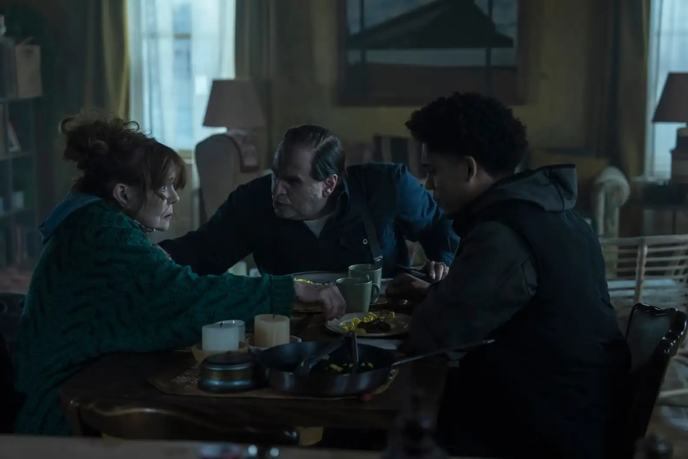
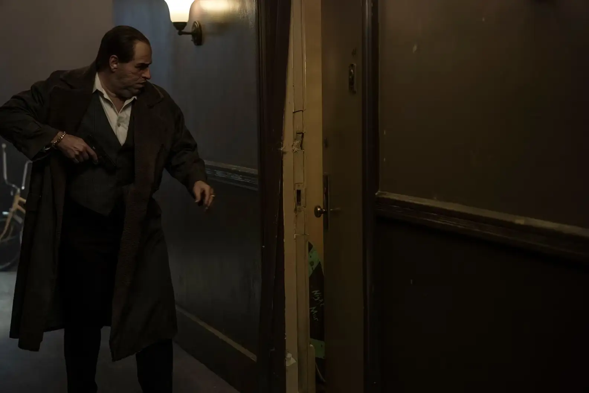

- Inicio
- Episodios
Expediente completo de episodios
Ocho informes, uno por capítulo. Cada carpeta tiene la sinopsis sin spoilers, la fecha de emisión, la duración y quién aparece. Adentro está el informe completo.
- Informes
- 08
- Emisión
- 19.09 — 10.11.2024
- Metraje total
- 7 h 45 min
- Cadena
- HBO · Max
Listado de episodios
-

Cerrado 1 h 7 min After Hours Una noche de copas termina con un error que Oz tiene que tapar como sea, antes de que los Falcone se enteren. OzVictorSofiaMaroniFrancis Emisión Abrir informe -

Cerrado 56 min Inside Man Oz necesita a alguien adentro y arma un doble juego entre las dos familias más peligrosas de Gotham. OzVictorSofiaMaroniFrancis Emisión Abrir informe -

Cerrado 1 h Bliss La droga que todos quieren controlar pone a Oz en medio de dos fuegos… y de una alianza muy frágil. OzVictorSofiaMaroni Emisión Abrir informe -
 Cerrado
59 min
Cent'Anni
Arkham, años atrás: la historia de Sofia Falcone contada desde adentro, sin filtros.
OzSofia
Emisión
Abrir informe
Cerrado
59 min
Cent'Anni
Arkham, años atrás: la historia de Sofia Falcone contada desde adentro, sin filtros.
OzSofia
Emisión
Abrir informe
-

Cerrado 55 min Homecoming Sofia vuelve a jugar para ganar, y Oz tiene que moverse más rápido que nunca para no quedar atrapado. OzVictorSofiaMaroniFrancis Emisión Abrir informe -

Cerrado 53 min Gold Summit Una cumbre con los jefes del bajo mundo: el lugar ideal para cerrar un trato… o para tender una trampa. OzVictorSofiaMaroniFrancis Emisión Abrir informe -

Cerrado 47 min Top Hat Una mirada al pasado de Oz en Crown Point, y a lo que se trajo de ahí. OzSofiaMaroniFrancis Emisión Abrir informe -
 Caso final
1 h 8 min
A Great or Little Thing
El último movimiento de la partida, y el precio que hay que pagar por ganarla.
OzVictorSofiaFrancis
Emisión
Abrir informe
Caso final
1 h 8 min
A Great or Little Thing
El último movimiento de la partida, y el precio que hay que pagar por ganarla.
OzVictorSofiaFrancis
Emisión
Abrir informe
| N.º | Informe | Emisión | Duración | Sujetos | Estado |
|---|---|---|---|---|---|
| 01 | After Hours | 1 h 7 min | Oz · Victor · Sofia · Maroni · Francis | Cerrado | |
| 02 | Inside Man | 56 min | Oz · Victor · Sofia · Maroni · Francis | Cerrado | |
| 03 | Bliss | 1 h | Oz · Victor · Sofia · Maroni | Cerrado | |
| 04 | Cent'Anni | 59 min | Oz · Sofia | Cerrado | |
| 05 | Homecoming | 55 min | Oz · Victor · Sofia · Maroni · Francis | Cerrado | |
| 06 | Gold Summit | 53 min | Oz · Victor · Sofia · Maroni · Francis | Cerrado | |
| 07 | Top Hat | 47 min | Oz · Sofia · Maroni · Francis | Cerrado | |
| 08 | A Great or Little Thing | 1 h 8 min | Oz · Victor · Sofia · Francis | Caso final |
No hay informes con ese sujeto. Probá con otro filtro.
Nota del archivista
Las sinopsis de esta página no tienen spoilers. Dentro de cada informe, los datos que revelan giros de la trama están tachados así: pasá el mouse o tocalos para leerlos.
¿Querés saber quién es quién antes de empezar? Revisá el tablero de personajes.